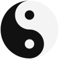

免费
MIT 许可，开源。
键盘驱动浏览
来自 Noctivagous Software 的 Chrome 扩展
用鼠标指向。
用键盘激活。
更快捷的网页浏览方式。
核心手势
用鼠标指向。用按键点击。


使用 KeyPilot 是什么感觉
我们做了一个 KeyPilot 的微型演示，包含两项按键操作。将鼠标悬停在链接上，按 F 打开。按 D 返回。
此演示面向桌面电脑，需要同时使用鼠标和键盘。
滨海新闻
港湾新闻
 本周末，港区灯光将重新点亮
码头夜步重新开放
关于本报
本周末，港区灯光将重新点亮
码头夜步重新开放
关于本报
工人完成了 4 号码头最后一排灯具，为期两年的修复工程结束。
日落后夜步重新开放。市场摊位延长一小时营业。
阅读：码头夜步重新开放
日落后再开放步道，4 号码头加装了照明。
滨海商户预计将迎来繁忙的秋日周末。
《港湾新闻》自 1884 年起报道中部海岸与佩诺布斯科特湾。
这份微型报纸用来试用 KeyPilot 的 F 键和 D 键。
键盘
KeyPilot 提供一整套按键操作布局。下方是键盘参考窗口的复现，您可以在使用本程序时保持它打开。将指针悬停在按键上，查看它在默认浏览布局中的作用。
页面上


双模控制
想想吉他作为乐器是如何存在的。两只手被分配了不同的任务。
这两项活动相互依存。音符要响起来，必须先由左手摆好。左手又依赖右手去弹奏，否则它会保持沉默。

Noctivagous 说明，鼠标对桌面软件的控制也应追求同样的原则。按今天的用法，鼠标把过多认知负担加在使用者身上：把 1）转向（移动光标）和 2）触发功能（点击）合并到同一装置、同一位置，并把这一切都交给一只手。
把这些角色分开，放到使用双手的两个输入位置，使用者对软件就有更大的控制。例如触控板可以继续转向光标，而“点击”发生在别处，第一次由另一只手控制。于是出现完全不同的软件动态，如上方演示所示。对软件开发者而言，界面理论的机会由此打开。
重要的是：1968 年发明鼠标的只有一个人，Douglas Engelbart，此后它几乎没有改变。当时它是个人电脑的一次升级，但几十年后，在许多场合，它成了一种乏味、使人疲倦的电脑操作方式。触屏平板并没有让它过时。其一，正面触摸屏幕上的对象并不精确。与电脑交互的两种方式都有很大改进空间，也都可以从双模控制 / Dual-Input 理论中获益。
这款扩展旨在推广我们称为双模控制的界面理论。仍像以往一样用鼠标移动光标，但用键盘按键而不是鼠标按钮来激活。将鼠标悬停在链接上，按 F 即可点击，或按 G 在后台新标签页中打开。这样很快。我们称之为按键点击。
除 F 之外还有许多按键操作。KeyPilot 的强大之处正在于此：一套包含大量按键点击功能的键盘布局，可在内置的 Layout Config 编辑器中自定义。免费，采用 MIT 许可证。
本页的按键点击动画展示了这一手势：用鼠标指向，按 F 打开，再按 D 返回。
为何选择 KEYPILOT
MIT 许可，开源。
为高效操作打造的键盘布局。
扩展安装即可使用。